Overview
一個由在地人當嚮導的旅遊推薦平台。
課題是設計一款能解決日常生活問題的行動 App。在使用者訪談與研究中我們發現：旅人探索新目的地時，多半仰賴社群媒體或口耳相傳來尋找道地的在地店家 —— 但這些方式只能觸及所有可能性中的一小部分。
我們的解法是提供一個平台，讓在地居民擔任嚮導、推薦店家與行程 —— 讓那些沒有大筆廣告預算、容易被社群或推薦網站淹沒的好店，被旅人看見。
Process
兩週衝刺：從訪談到 wireframe。
在 Miro 與 Figma 上完成完整的 UX 流程：使用者訪談、人物誌、任務流程圖、網站地圖、wireframe，一路到字體、色彩與元件系統。
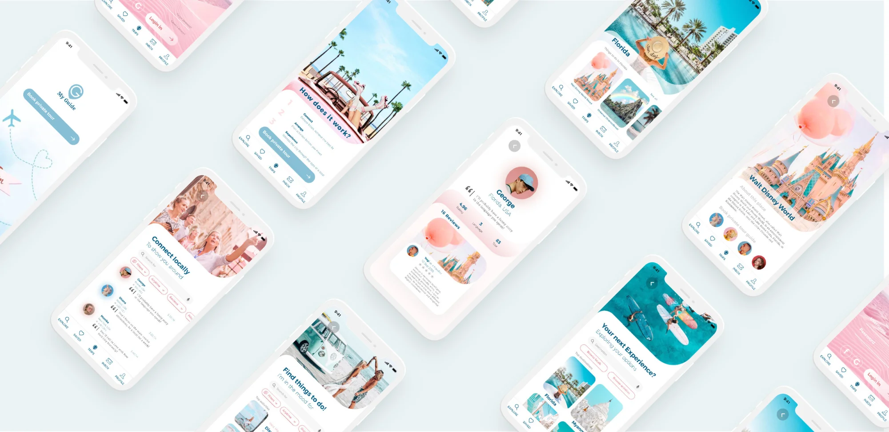
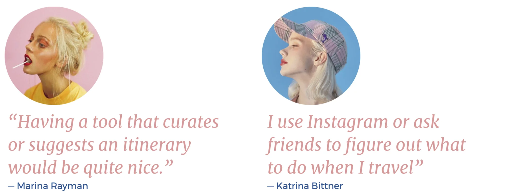
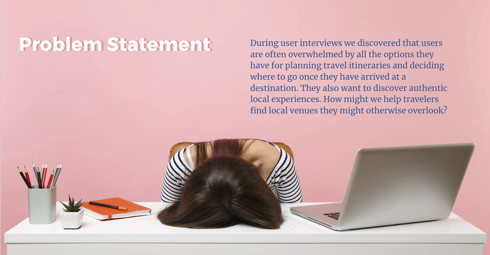
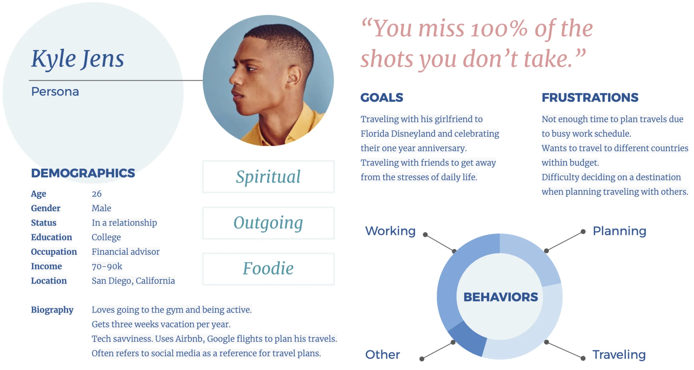
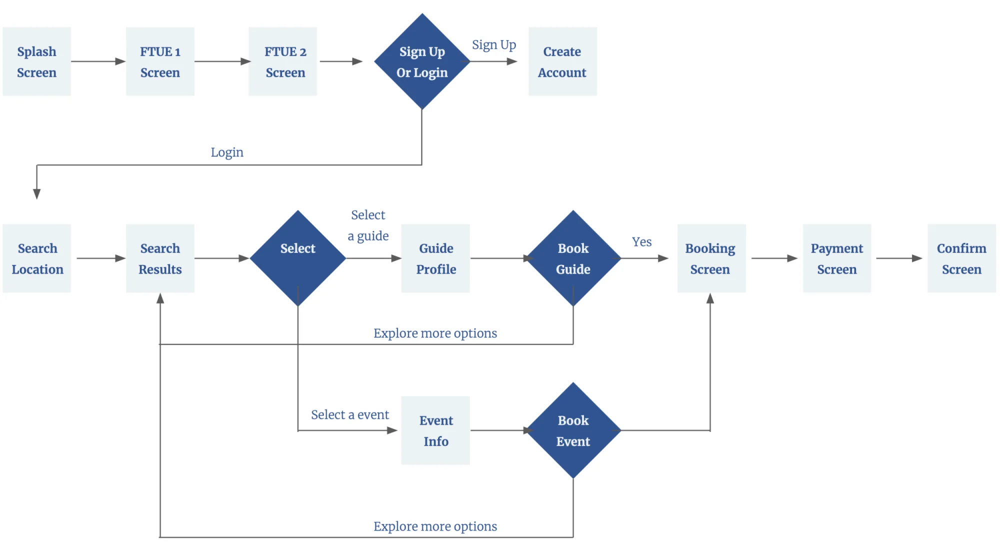
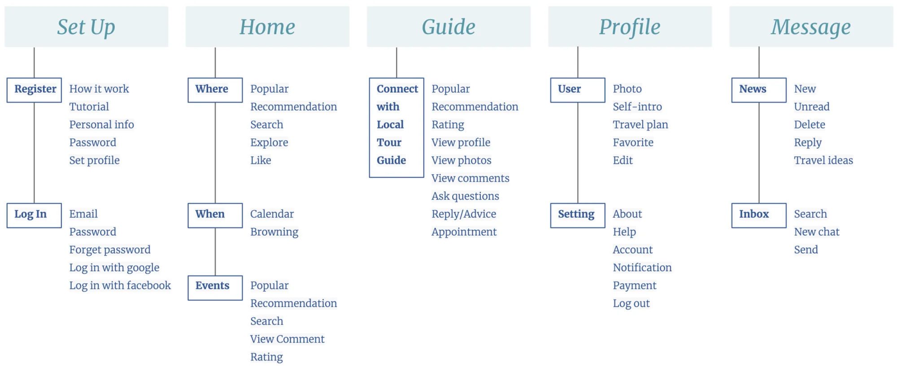
Design System
字體、色彩與元件。
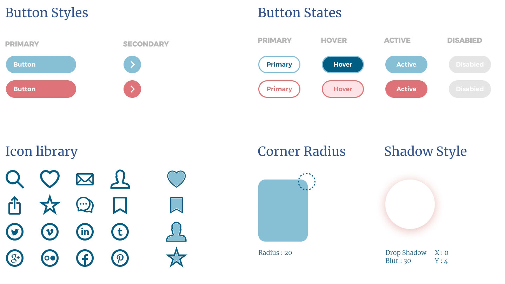
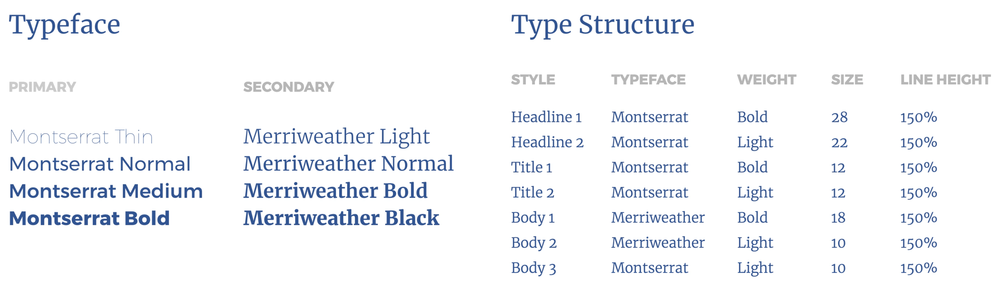
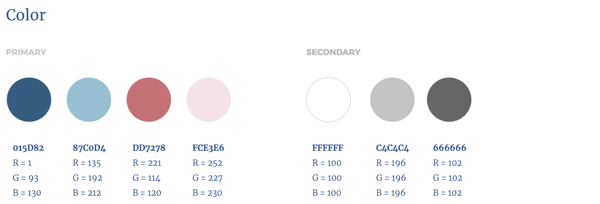
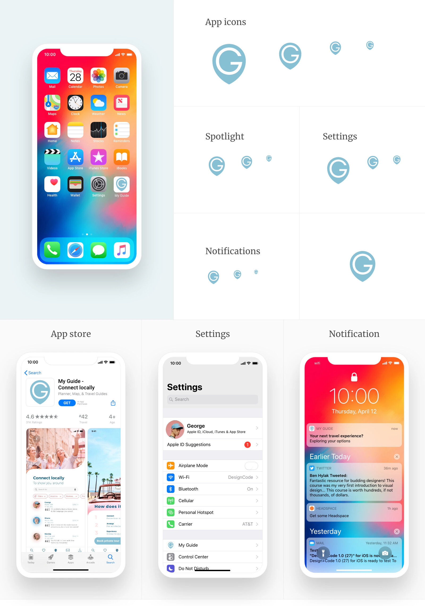
Final Screens
最終畫面。
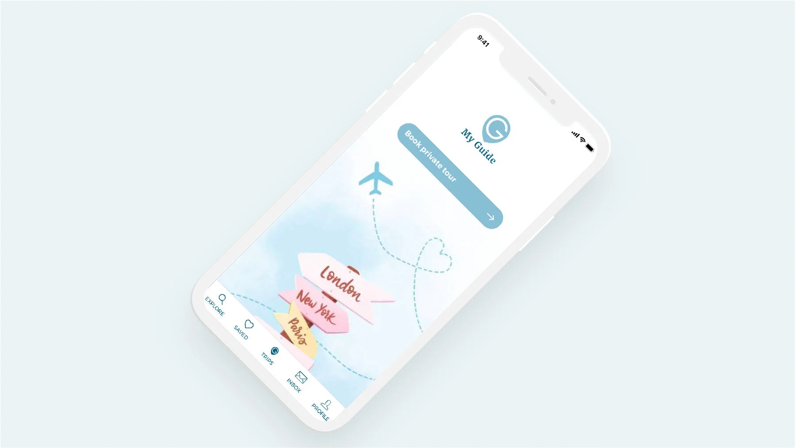
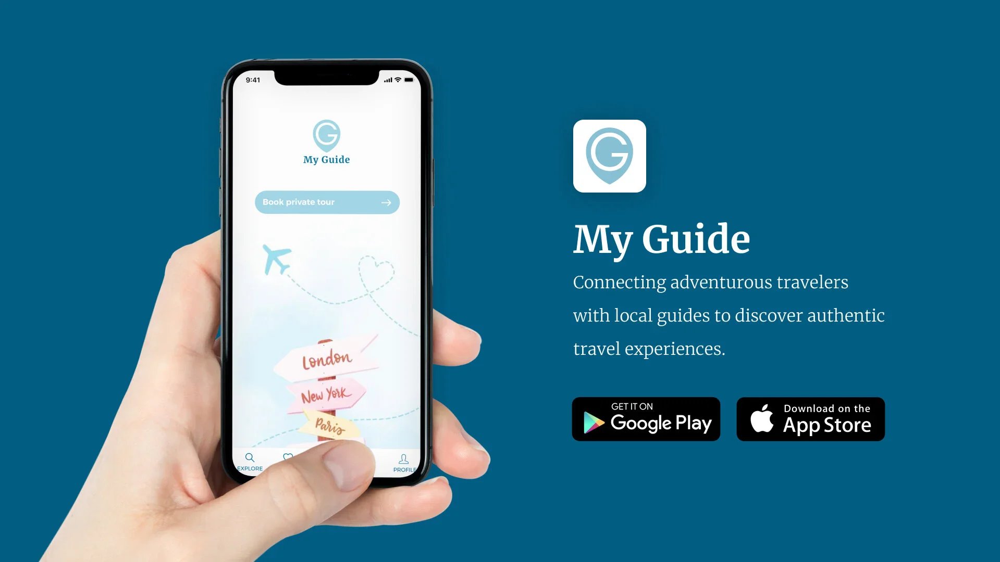
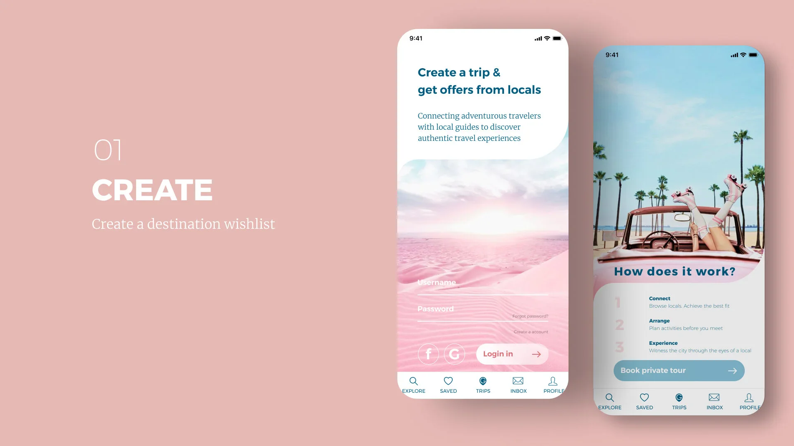
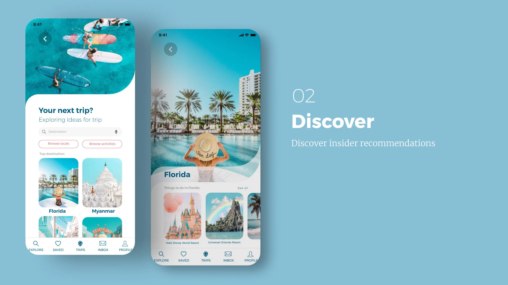
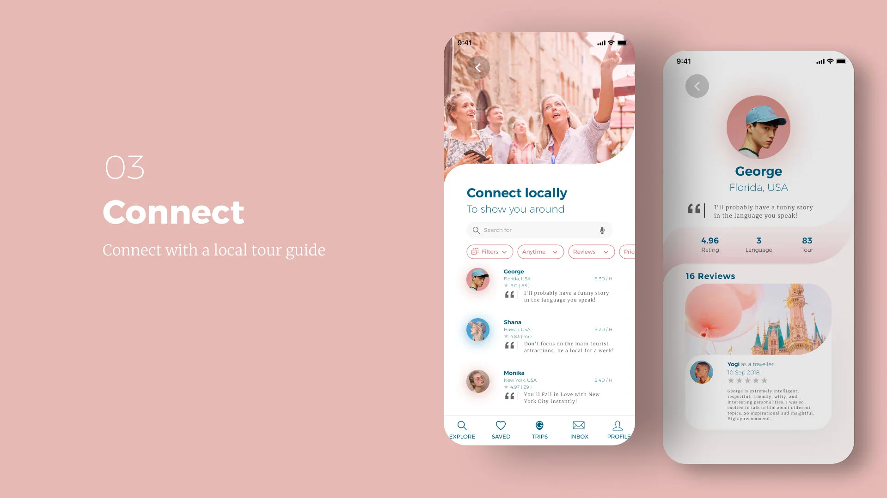
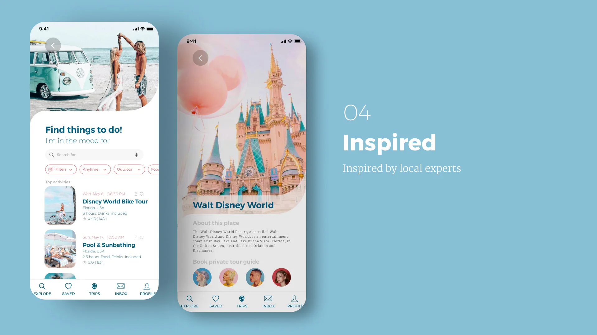
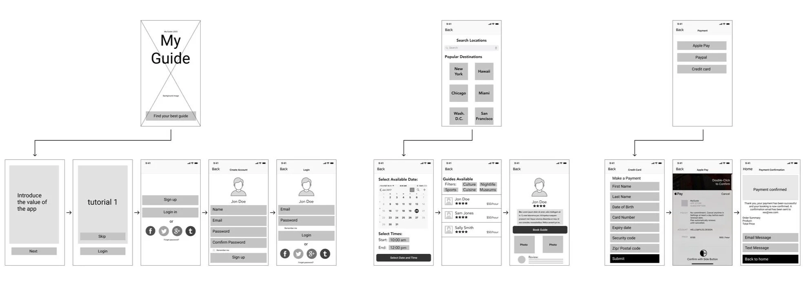